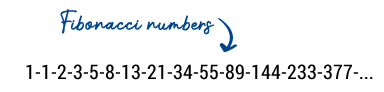
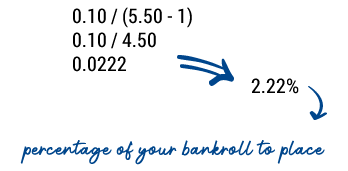

Best Betting Strategies
Register and get 200% Welcome Bonus promocode for bonus Soul

The Fibonacci betting system is one of many betting strategies available today. Here we explain what it is all about.
But there are definitely sports bettors who were able to achieve great success with it.
This strategy carries some risks, but with the necessary luck and the right nose, you can be successful while employing this strategy. The basic concept of betting according to the Fibonacci sequence is simple: bet on a tie.
If you lose, just bet on the next tie according to a certain key and start increasing your stake. It is important that the odds for the tie are above 2.62 (more precisely: 2.618);
luckily for those who want to employ this strategy, there are many tie bets for this minimum odds. The higher the rate, the better. Fibonacci Betting Strategy Betting after Fibonacci If you lose, you simply bet the next tie after a Fibonacci sequence.
It is a sequence of numbers in which the sum of two consecutive numbers results in the next number,
making the Fibonacci sequence an infinite sequence of natural numbers. You can find more information about the Fibonacci sequence onWikipedia.  Fibonacci numbers The Fibonacci sequence So if you start betting with 1 € on the first draw with odds> 2.62 and lose,
then the next time you bet 1 € again, then 2 €, then 3 €, then 5 €, then 8 €, then 13 € and so on.
It is mathematically understandable that every profit that you will achieve with this bet will offset the previous losses and you will even make a net profit.
In this case, you have already gambled away 143 € and finally successfully placed the eleventh number in the Fibonacci sequence, 144, on a bet.
If we now assume that the successful bet had odds of @ 2.80, you win 403.20 €. You have wagered a total of 287 €, making your net profit 116.20 €.
The disadvantage of this strategy is also obvious.
Assuming you lose not ten bets in a row, but twenty, then you would have already lost 16,910 € in stakes.
This is a huge bankroll, which you should of course never risk for such a betting sequence.
You can find more about this in our explanations on bankroll management.
The Fibonacci betting system – our conclusion
Otherwise, you will eventually no longer be able to afford the stakes and you will lose a lot of money.
Of course, this strategy can also work well. For example, you can focus on a specific team that is known to draw often.
But purely based on the theory of probability, one day you will surely get into a stage that you can no longer manage financially.

Now we can continue to calculate and find the best possible stake for this bet. The formula used to choose a reasonable stake looks like this:
Percentage of bankroll to be set = value / (odds – 1)
In our case this means: 
The Kelly Formula hereby recommends that, given the probability that you have determined yourself and the odds you have chosen,
you should bet 2.22% of your bankroll on this event.
Now, of course, the use of this formula also depends heavily on your assessment of the probability.
And if you consider a game outcome to be very likely and thus increase the value considerably, then it can happen that you get 30% or even more of your bankroll as a result. Of course, caution is advised here because your bankroll can slide down very quickly this way.
It is also possible that you will get a negative result when calculating the first value.
This happens if you bet too low with an expected probability of winning on an event with too low odds. The result is that your value is negative, which means nothing else than: if you are unsure about this, then this bet just doesn’t pay off …